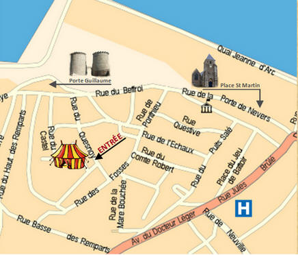

infos
pratiquesvillage du festival
Cour du CastelRue du Quesnoy
Saint Valery sur Somme Sanitaires - Accès handicapés En cas d'intempéries, le festival vous accueille dans les meilleures conditions : l'ensemble du « Village du Festival »est bâché. Quant aux spectacles, ils se déroulent sous chapiteau. Vous ne recevrez donc pas une goutte !
réservation & achat des billets
à la billeterie (à partir du 1er mai)
Place des PilotesSaint Valery sur Somme
Jours d'ouverture
Du lundi au vendredi> de 15 h à 19 h Week-end et jours fériés
> de 10 h à 12 h & de 15 h à 19 h Durant les quatre jours du festival, la billetterie est transférée sur le site du Village du Festival. Elle y est ouverte toute la journée.
par téléphone
06 86 37 58 57par e-mail
reservation@festival-saint-valery.fr Pour les réservations par téléphone ou mail, le paiement s'effectue par l'envoi d'un chèque à l'ordre de « Théâtre en Festival » sous quatre jours; à l'adresse : MC Morenas - 3 rue du Beffroi- 80230 Saint Valery sur Somme. Passé ce délai, toute place réservée mais non réglée sera automatiquement remise en vente (pour les tarifs réduits, joindre obligatoirement une photocopie des justificatifs). À partir du 29 mai, les places réservées par téléphone doivent être retirées au maximum le jour du spectacle et avant 18 heures. Il est fortement conseillé de réserver.

où dormir pendant le festival
-
Le Castel - Rue du Castel
Saint Valery // Tél. 03 22 60 82 36 -
Villa les Roses - 9 rue Jules Brulé
Saint Valery // Tél. 03 22 60 69 83 -
Roses et Courtines - 94 rue Saint Nicolas
Saint Valery // Tél. 03 22 26 86 71 -
M. et Mme Deloison - 1 Quai du Romerel
Saint Valery // Tél. 03 22 26 92 17 -
Hôtel des Pilotes - 62 rue de la Ferté
Saint Valery // Tél. 03 22 60 80 39 -
Hôtel Les Corderies - 214 rue des Moulines
Saint Valery // Tél. 03 22 61 30 61 -
Hôtel du Port et des Bains - 1 Quai Blavet
Saint Valery // Tél. 03 22 60 80 09 -
Passage en Baie - Quai Perrée
Saint Valery // Tél. 06 09 49 49 04 -
Hôtel Picardia - Quai du Romerel
Saint Valery // Tél. 03 22 60 62 30 -
Au Vélocipède & La Femme d'à côté - Rue du Puits Salé
Saint Valery // Tél. 03 22 60 57 42 -
L'Auberge de la Marine - Rue Florentin Lefils
Le Crotoy // Tél. 03 22 27 92 44 -
Hôtel les Tourelles - 2-4 rue Pierre Guerlain
Le Crotoy // Tél. 03 22 27 16 33 -
Le Château des Lumières
Saint Blimont // Tél. 09 62 20 42 83 -
Hôtel Les Saules - 1075 Rue des Forges
Favières // Tél. 03 22 27 04 20
Mentions Légales | Copyright © Théâtre en Festival. Tous droits réservés